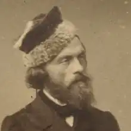

Ціпріан Каміль Норвіда походив із збіднілого шляхетського роду. Народився 24 вересня 1821г. в селі Лясков-глухий (біля Варшави, на Мазовше) де до теперішнього часу варто сільський будинок, побудований його дідом з боку матері —Зджеборовскім. Будинок являє собою споруду 18 в. з ганком на дерев'яних колонах, увінчаним трикутним фронтоном і чотирикутної дахом, критої гонтою.
Батько його, Ян походив із шляхетського роду герба Топурія (Topor). Мати, Людвіка Зджеборовская, полягала в кровній спорідненості з королівською вервью роду Собєських.
Мати померла рано, коли Норвіда було чотири роки, (батько Ян помер у в'язниці, укладений за несплату боргів, коли Норвіда було чотирнадцять). Після смерті матері виховувався своєю прабабусею Хіларією Зджеховской з роду Собєських. У 1830р., Після смерті прабабусі і спалаху польського повстання, Ян Норвіда з дітьми переїжджає до Варшави. Разом зі своїм старшим братом Людвиком (поет) він навчався у Варшавській гімназії в 1831-1832 і 1834-1837 роках. Уже в ранній молодості Норвіда проявляє інтерес до літератури і живопису. Не закінчивши п'яти класів, він перервав навчання і вступив в приватну школу живопису Олександра Кокуляра, а пізніше в художню майстерню Яна Мінасовіча. У більш пізньому періоді він намагався заповнити недолік в освіті, накопичуючи знання в різних областях, часто дуже безладно. Також його навчання в області живопису і скульптури, незважаючи на стійкість традицій великих художників Ренесансу, мали характер хаотичних і випадкових пошуків. Як поет дебютував в 1840 р ліричним віршем "Мій останній сонет", надрукованим анонімно на сторінках Варшавських газет. Восени 1841р., Супроводжуваний Владиславом Вежіком, він здійснює поїздку навколо Польського Королівства. У той час такі подорожі були широко поширені в середовищі молодого творчого покоління, рухомі романтичними ідеями і спрагою пізнання, вони нерідко заходили в сільські будинки, вивчали життя і звичаї місцевого люду. Портрет Норвіда, кисті П.Шіндлера. Друга поїздка відбулася в 1842р. в супроводі Антонія Чайковського, якого він згодом присвятить свій знаменитий "фортепіано Шопена". У вересні 1842р. він виїжджає за кордон, і більше вже ніколи не повертається на батьківщину. Подорожуючи по Європі, Норвіда відвідав Дрезден, Нюрнберг, Мюнхен, Верону і Флоренцію. У Флоренції він записався в відділ скульптури Академії Мистецтв. Він також відвідав Неаполь і Рим. У 1845 в Римі, в костелі св.Клавдія, який в той час виконував роль польського костелу в Римі, взяв собі друге ім'я Каміль (що відноситься до римського вождю Маркусу Феріусу Камілласу) тепер він підписував свої роботи "Ціпріан Каміл Норвід", підкреслюючи цим способом своє фіктивне "римське походження". За іншою, більш вірогідною версією, ім'я Каміль він бере в пам'ять про свою першу юнацького кохання. Її звали Камілія Л., Норвіда був заручений з нею, але через деякий час вона в листі розриває з ним заручини. У 1845г. у Флоренції він познайомився з Марією Калергіс і її подругою Марією Трембицький. Він закохався в міс Калержі. Це була особа, зводила з розуму багатьох сучасників: Ліста, Шопена, Готьє. Знаменита красуня, "німкеня за походженням, гречанка за чоловіком, полька по національності матері і потягу серця" була оспівана багатьма поетами. Теофіль Готьє писав про неї в "емаль і камеях", Гейне оспівав Марію Калержі в "Романсеро". Роман Норвіда з Марією Калержі тривав всього близько півтора років, в 1842-1844 роках, але їй присвячено багато вірші, написані поетом і пізніше, повні спогадів про неї, любові і відчаю. У товаристві коханої жінки і її подруги подорожує через Італію до Берліна. Точно так само як його попередні поїздки навколо країни, ця поїздка мала пізнавально-освітній характер; поет міг відвідати найвідоміші міста Європи того часу (Помпею, Сорренто, Капрі), піднімався на вершину Везувію. Нарешті, перетинаючи Сілезію, він досягає Берліна, де 10 червня 1846р. був заарештований пруськими владою. (Залишаючи Польщу, він віддав свій закордонний паспорт одного з друзів, який втік з-під арешту. На вимогу російського посольства Норвіда був затриманий і поміщений до берлінської в'язниці. У в'язниці він оглух. Пізніше, під час франко-пруської війни, коли п'ятдесятирічний поет записався у французьку армію, ця глухота перешкодила йому захищати Париж.) в кінці липня, після звільнення, перебирається в Брюссель і пізніше в Рим. Тут він зустрічає Адама Міцкевича і зав'язує дружбу з Зігмунтом Красінський. У травні 1848р., Норвіда бере аудієнцію у Папи Римського Піуса IX, подорожує по Середземному морю. У 1849р. він прибуває в Париж, де зустрічає Юліуша Словацького, Фредеріка Шопена і Богдана Залеського. Він бере участь в діяльності емігрантських організацій, але його громадські мови не користуються абсолютною підтримкою. Його фінансова ситуація стрімко погіршувалася. Якщо раніше він покладався на грошову підтримку від Зигмунта Красінського й Августа Чешковського, то в 1851г. в зв'язку з назрілою конфліктом з Красінський, Норвід повертає назад його листи і 29 листопада 1852р. прибуває в Лондон, щоб через океан дістатися в Нью-Йорк. Довгий двомісячний переїзд був важким і болісним, що супроводжувався голодом і епідемією холери. У Нью-Йорку він працює графіком в майстерні при організованою Всесвітній виставці. Але з кожним днем його матеріальне становище стає ще більш безнадійним, що змушує його покинути Америку, і 24 червня 1854р. відправитися назад в Європу. У грудні 1854р. він повернувся в Париж, який не покидав вже до кінця життя. Він зіткнувся з ще більшою бідністю, до того ж додаються конфлікти з друзями, причиною яких стала глухота поета. У лютому 1877р. він був змушений перебратися в Іврі в притулок св.Казимира, призначений для польських сиріт та ветеранів. Помер вночі уві сні з 22 на 23 травня 1883р. від туберкульозу. Відразу після смерті, його кімната була прибрана і спалені всі папери і рукописи, зібрані в столі. Він був похований на кладовищі в Іврі, але після закінчення п'яти років, його прах був перепохований в загальній могилі невідомих польських емігрантів на кладовищі Монморансі.